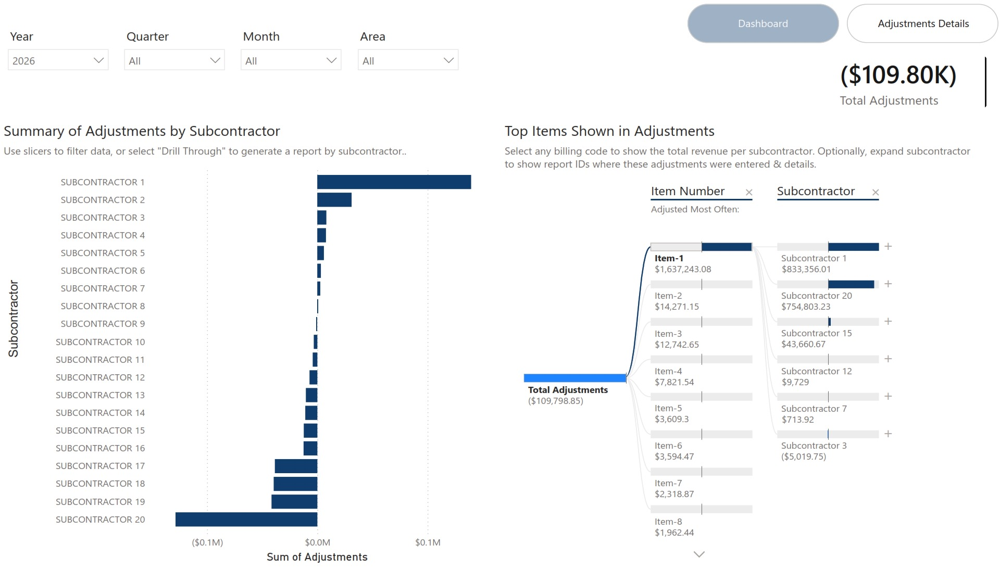
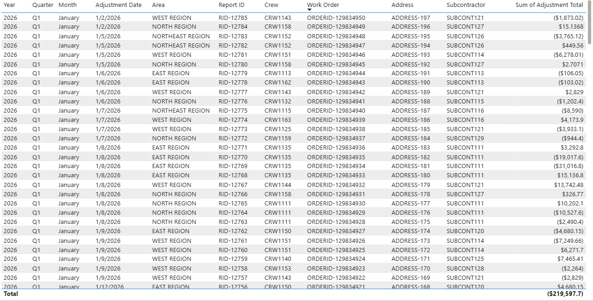
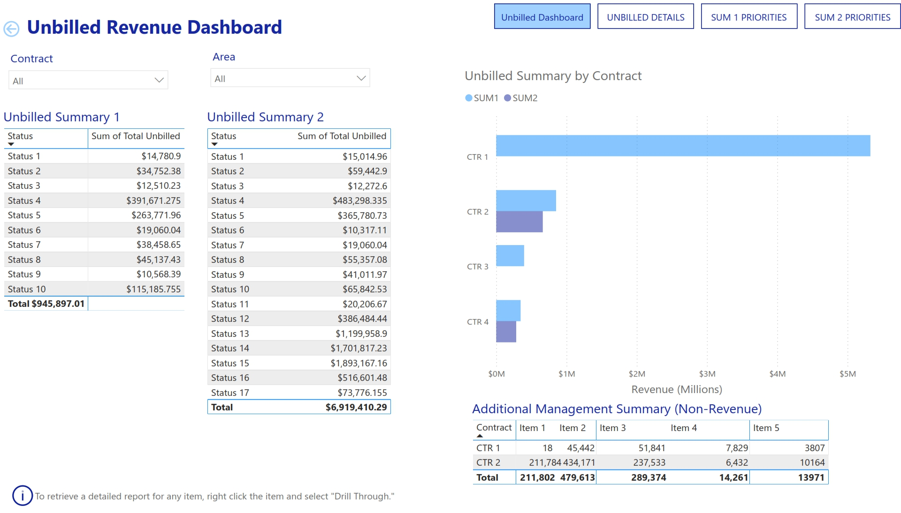
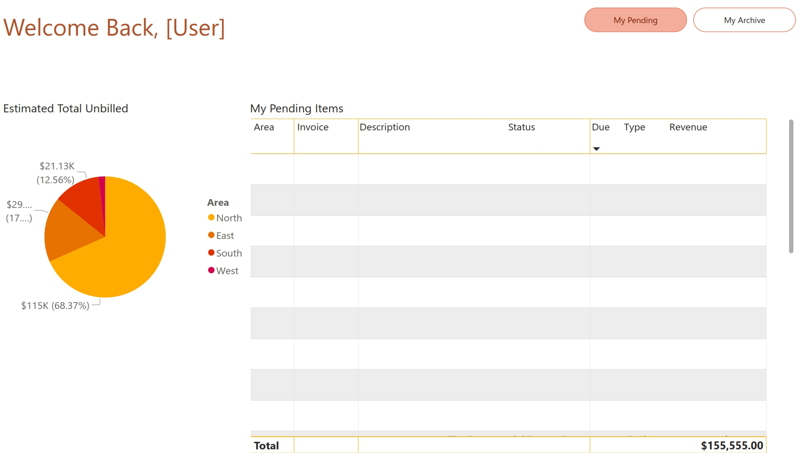

Invoice Adjustment Audit
Summary view for identifying adjustment volume, trends, and review focus areas.
Open case study →Power BI · KPI Reporting · Billing Intelligence
Dashboard case studies and validation frameworks that turn billing operations data into visibility, prioritization, and decision support.
Reporting Layer
This portfolio is the visibility layer: Power BI case studies, KPI logic, billing operations dashboards, invoice adjustment analysis, and validation frameworks.
Where are adjustments happening, and what patterns require review?
What completed work remains unbilled, aging, or exposed to delay?
What work requires attention by status, owner, volume, or exception state?
How should billing decisions be standardized and documented?
Dashboard Evidence

Summary view for identifying adjustment volume, trends, and review focus areas.
Open case study →
Record-level audit support for transaction review and discrepancy investigation.
Open case study →
Visibility into aging work, billing risk, and unresolved revenue exposure.
Open case study →
Personalized operational view for workload, status, and billing review priorities.
Open case study →Framework concept for standardizing billing decision logic and validation rules.
Open framework →Portfolio-level explanation of dashboard artifacts and analytics positioning.
Open README →Metric Glossary
| Metric | Definition | Business Use |
|---|---|---|
| Unbilled Revenue | Completed or pending work not yet invoiced or fully processed. | Identifies cash-flow and backlog exposure. |
| Adjustment Volume | Count of billing records requiring correction or review. | Shows workload and process stability. |
| Aging Bucket | Time-based grouping of unresolved work items. | Prioritizes overdue or at-risk items. |
| Exception Rate | Share of records requiring manual review or special handling. | Measures process quality and control effectiveness. |